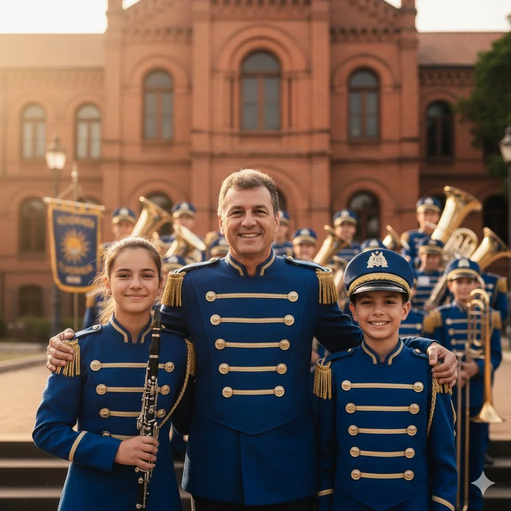

Seja um Voluntário
Você tem habilidades administrativas, de comunicação ou simplesmente vontade de ajudar? Precisamos de voluntários para organizar eventos, buscar patrocínios e apoiar nossa logística. Sua ajuda é fundamental.
Acreditamos no poder da música como ferramenta de inclusão e transformação. Nossos projetos são o coração da nossa missão.
Levamos a música para além dos nossos ensaios. Regularmente, nossos membros mais experientes, sob a supervisão de instrutores, realizam oficinas gratuitas de percussão e sopro em escolas públicas e centros comunitários da região.
O objetivo é despertar o interesse pela arte, oferecer uma atividade construtiva para crianças e adolescentes e identificar novos talentos que possam, no futuro, integrar a nossa banda.
Acreditamos no poder terapêutico da música. Por isso, organizamos visitas e apresentações especiais em formato reduzido para instituições de longa permanência (casas de repouso), hospitais e centros de acolhimento em nossa cidade.
Nosso objetivo é levar alegria, conforto e um momento de descontração para pessoas que enfrentam rotinas difíceis ou que possuem mobilidade reduzida, compartilhando nossa arte e oferecendo apoio emocional através das melodias.
Unimos nossa paixão pela música à necessidade da comunidade. Semestralmente, promovemos um "Ensaio Aberto Beneficente" em uma praça pública, convidando toda a população para assistir e participar.
A entrada para o evento é simbólica: pedimos a doação de 1kg de alimento não perecível. Todos os itens arrecadados são integralmente destinados a instituições de caridade locais que amparam famílias em situação de vulnerabilidade.
Você tem habilidades administrativas, de comunicação ou simplesmente vontade de ajudar? Precisamos de voluntários para organizar eventos, buscar patrocínios e apoiar nossa logística. Sua ajuda é fundamental.
Muitos jovens talentosos não têm condições de adquirir um instrumento. Se você tem um instrumento musical em bom estado que não usa mais, sua doação pode transformar a vida de alguém.
Sua doação financeira nos ajuda a custear uniformes, manutenção de instrumentos, transporte para apresentações e o lanche de nossos jovens músicos. Qualquer valor faz uma grande diferença.
Use nossa chave PIX para uma doação rápida e segura.
Você também pode doar diretamente em nossa conta.